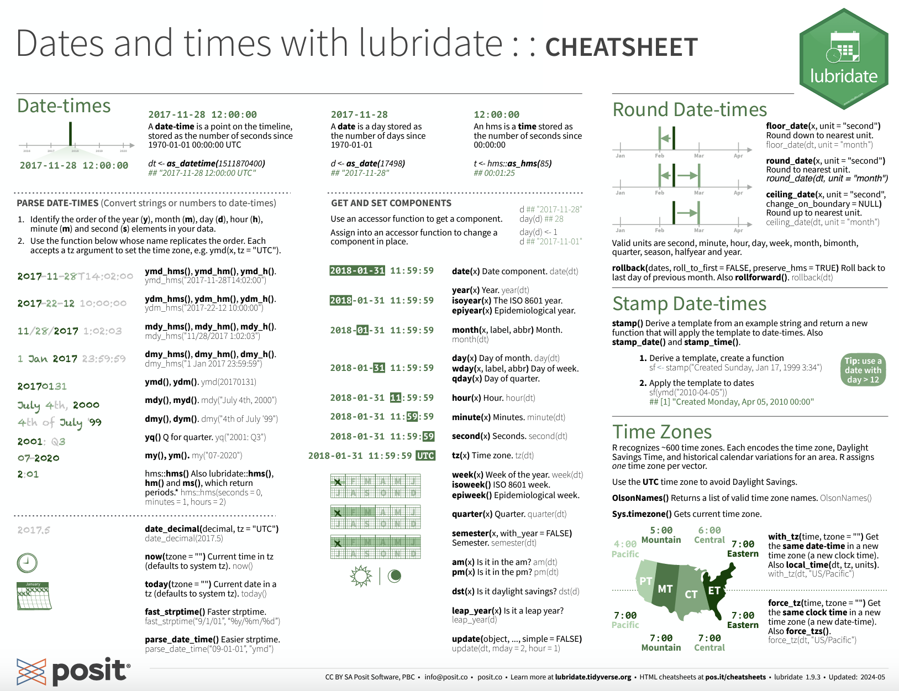

Using lubridate to Work with Dates
Thursday, October 24
Today we will…
- Reminder About Lab 3 / Challenge 3 Revisions
- Debrief Lab 4
- Lab 4 Peer Code Review
- Midterm Portfolio
- What to Expect
- How to Get Started
- New Material
- Working with Date & Time Variables
- PA 5.2: Jewel Heist
Lab 3 / Challenge 3 Revisions
Lab 3 / Challenge 3 Revisions
Revisions are due by Friday
. . .
Any problem receiving a “Growing” can be revised and submitted for additional feedback
Lab 4
Common Mishaps
- Q1: Who collected these data? When were the data collected?
- Q4: Column titles of
2008and2018are not descriptive!- Creating column names that describe the values stored in those columns!
- The
names_prefix =argument topivot_wider()can help you make better column names! - DVS-6: I can create tables which make my summaries clear to the reader
- Q4: Unless you specify
.groups = "drop"withinsummarize()your table still is grouped!group_by()+summarize()only drops the first group.- If you have two variables inside
group_by(), then the data will still be grouped by the second variable!
- Q7: The data description contains important information!
mc_toddler– Aggregated weekly, full-time median price charged for Center-based Care for toddlers.mhi_2018– Median household income expressed in 2018 dollars.
Recreating the Plot
DVS-2: I use plot modifications to make my visualizations clearer to the reader
- Facets ordered based on developmental stage not alphabetically
- Ordering colors in the legend so they appear in the same order as the lines in the plot.
. . .
DVS-3: I show creativity in my visualizations
- Exploring different color themes
- Personally, I like the
"Accent"palette from the RColorBrewer package, but you might like others! - Getting 10 colors is hard! I would recommend looking into the
colorRampPalette()function to get more colors.
- Personally, I like the
. . .
- Exploring different plot themes
- Personally, I like
theme_bw(), but you might like others!
- Personally, I like
Other “Big Picture” Code Feedback
I strongly recommend against nested functions, as they are difficult for people to understand what your code is doing. Having two lines is not less efficient and is more readable.
. . .
Can you do this entire process in one pipeline?
ca_counties <- counties |>
filter(state_name == "California")
ca_childcare <- childcare_costs |>
inner_join(ca_counties)Saving Objects That Aren’t Worth Saving
Don’t forget to complete your Lab 4 code review!
Don’t forget to complete your Lab 4 code review!
Make sure your feedback follows the code review guidelines.
Insert your review into the comment box!
Midterm Portfolios
What to Expect
You will create a Midterm Portfolio, with code covering the learning targets we have covered thus far in the course.
. . .
- Your code will be pulled from your Lab and Challenge assignments.
. . .
- You will write reflections on how you’ve:
- revised your thinking
- extended your thinking
- supported and collaborated with your peers
Getting Started
Follow these directions to fork a copy of the Final Portfolio repository.
Clone the repository into RStudio.
Open the
reflection_template.qmdfile and give it a read!Start finding excerpts of code you wrote for the Labs or Challenges that fit each learning target.
Date + Time Variables
Why are dates and times tricky?
When parsing dates and times, we have to consider complicating factors like…
- Daylight Savings Time.
- One day a year is 23 hours; one day a year is 25 hours.
- Some places use it, some don’t.
- Leap years – most years have 365 days, some have 366.
- Time zones.
lubridate
Convert a date-like variable (“May 8, 1995”) to a date or date-time object.
Find the weekday, month, year, etc from a date-time object.
Convert between time zones.
knitr::include_graphics("https://github.com/rstudio/hex-stickers/blob/main/thumbs/lubridate.png?raw=true")
The lubridate package installs and loads with the tidyverse.
date-time Objects
There are multiple data types for dates and times.
- A date:
dateorDate
- A date and a time (identifies a unique instant in time):
dtmPOSIXlt– stores date-times as the number of seconds since January 1, 1970 (“Unix Epoch”)POSIXct– stores date-times as a list with elements for second, minute, hour, day, month, year, etc.
Creating date-time Objects
Create a date from individual components:
make_date(year = 1995, month = 05, day = 08)[1] "1995-05-08"Create a date-time Object from a String
mdy("August 29, 1991")[1] "1991-08-29". . .
dmy("29-August-1991",
tz = "America/Denver")[1] "1991-08-29 MDT". . .
dmy_hms("29-August-1991 9:32:12",
tz = "America/Denver")[1] "1991-08-29 09:32:12 MDT". . .
as_datetime("91-08-29",
format = "%y-%m-%d")[1] "1991-08-29 UTC". . .
parse_datetime("8/29/1991",
format = "%m/%d/%Y")[1] "1991-08-29 UTC"Creating date-time Objects

Common Mistake with Dates
as_datetime(2023-02-6)[1] "1970-01-01 00:33:35 UTC"my_date <- 2023-02-6
my_date[1] 2015What’s wrong here?
. . .
Make sure you use quotes!
- 2,015 seconds \(\approx\) 33.5 minutes
Extracting date-time Components
bday <- ymd_hms("1989-01-14 12:03:12",
tz = "America/Denver")
bday[1] "1989-01-14 12:03:12 MST". . .
year(bday)[1] 1989month(bday)[1] 1day(bday)[1] 14wday(bday)[1] 7wday(bday,
label = TRUE,
abbr = FALSE)[1] Saturday
7 Levels: Sunday < Monday < Tuesday < Wednesday < Thursday < ... < SaturdaySubtraction with date-time Objects
Doing subtraction gives you a difftime object.
difftime objects do not always have the same units – it depends on the scale of the objects you are working with.
How old am I?
today() - mdy(01141989)Time difference of 13158 days. . .
How long did it take me to type this slide?
begin <- mdy_hms("10/21/2024 20:40:34")
finish <- mdy_hms("10/21/2024 20:43:11")
finish - beginTime difference of 2.616667 minsDurations and Periods
Durations will always give the time span in an exact number of seconds.
as.duration(
today() - mdy(01141989)
)[1] "1136851200s (~36.02 years)"Periods will give the time span in more approximate, but human readable times.
as.period(
today() - mdy(01141989)
)[1] "13158d 0H 0M 0S"Durations and Periods
We can also add time to date-time objects:
days(),years(), etc. will add a period of time.ddays(),dyears(), etc. will add a duration of time.
Because durations use the exact number of seconds to represent days and years, you might get unexpected results.
When is is my 99th birthday?
mdy(01141989) + years(99)[1] "2088-01-14"mdy(01141989) + dyears(99)[1] "2088-01-14 18:00:00 UTC"Time Zones…
…are complicated!
Specify time zones in the form:
- {continent}/{city} – “America/Denver”, “Africa/Nairobi”
- {ocean}/{city} – “Pacific/Auckland”
. . .
What time zone does R think I’m in?
Sys.timezone()[1] "America/Los_Angeles"Time Zones
You can change the time zone of a date in two ways:
x <- ymd_hms("2024-10-24 18:00:00",
tz = "Europe/Copenhagen"). . .
with_tz()
Keeps the instant in time the same, but changes the visual representation.
x |>
with_tz()[1] "2024-10-24 09:00:00 PDT"x |>
with_tz(tzone = "Asia/Kolkata")[1] "2024-10-24 21:30:00 IST"force_tz()
Changes the instant in time by forcing a time zone change.
x |>
force_tz()[1] "2024-10-24 18:00:00 PDT"x |>
force_tz(tzone = "Asia/Kolkata")[1] "2024-10-24 18:00:00 IST"Common Mistake with Dates
When you read data in or create a new date-time object, the default time zone (if not specified) is UTC (Universal Time Coordinated)*.
. . .
So, make sure you specify your desired time zone!
x <- mdy("11/20/1993")
tz(x)[1] "UTC"x <- mdy("11/20/1993",
tz = "America/Los_Angeles")
tz(x)[1] "America/Los_Angeles"*UTC is the same as GMT (Greenwich Mean Time)
PA 5.2: Jewel Heist

This activity will require knowledge of:
- Converting time zones
- Extracting components of a date
- Filtering based on date components
- Making intervals of time
- Filtering values that fall into an interval
- Finding the duration between two dates
- Modulus division
None of us have all these abilities. Each of us has some of these abilities.
lubridate Resources
Every group should have a lubridate cheatsheet!
On the Front:
- Middle Column – functions related to “getting components” of dates
- Bottom Right – functions related to time zones
On the Back:
- Left Column – functions related to adding / subtracting “periods” to / from dates
- Right Column – functions related to creating and using intervals of time

Task Card
Every group should have a task card!
. . .
On the Front
- the expectations of each role
- the norms of collaborating
On the Back
lubridatefunctions for different tasks you may encounter
Getting Started
The partner who got the most sleep starts as the Developer (typing and listening to instructions from the Coder)!
- The Coder does not type.
- The collaborative editing feature should allow you to track what is being typed.
- The Developer only types what they are told to type.
Submission
Submit the name of the thief to the Canvas Quiz.
- Each person will input the full name of the thief into the PA 5.2 quiz.
- The person who last occupied the role of Developer will download and submit the
PA-5-dates.htmlfile for the group.- Only one submission per group!
Lab 5: Murder in SQL City
![The image depicts a detective scene where a person wearing a trench coat and a wide-brimmed hat is standing in front of a bulletin board. The board contains various items connected by red strings, including a map, a photograph of mountains, a newspaper article with a photo of a person, a police badge, and a sticky note with the number '1992' on it. This setup is commonly associated with solving a mystery or crime, where clues are visually linked to help unravel the case. The detective appears to be analyzing these clues.](images/murder-in-sql-city.png)
To do…
- Lab 5: Murder in SQL City
- due Sunday, October 27 at 11:59pm